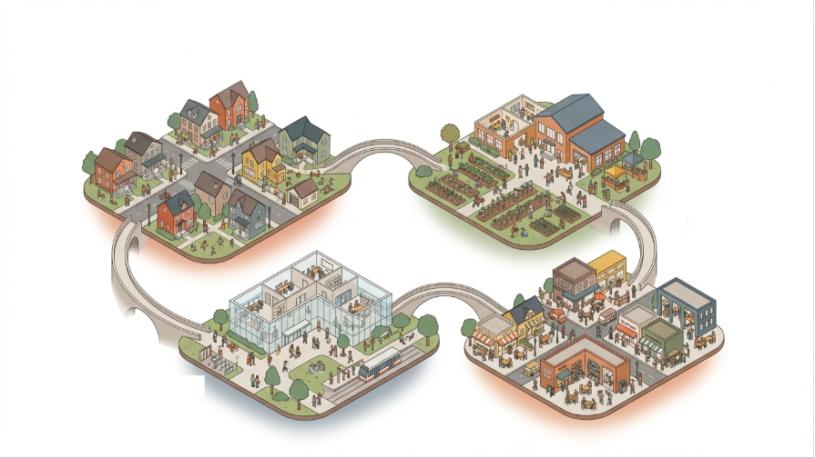
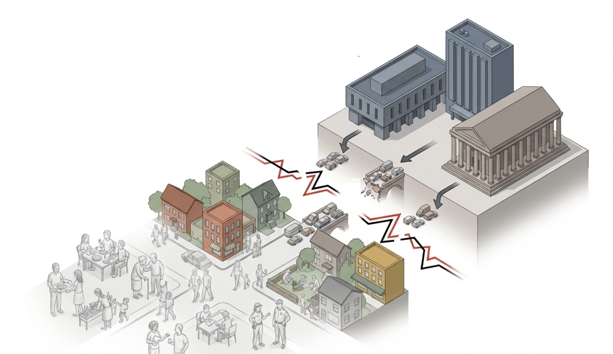
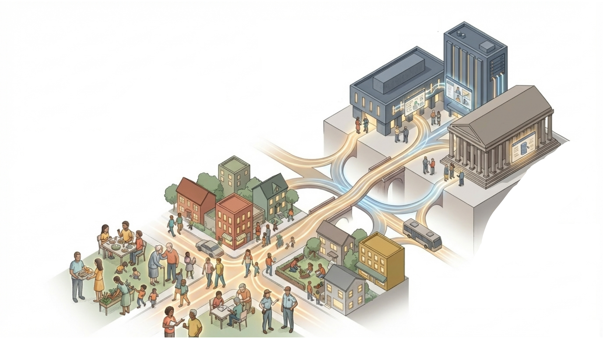
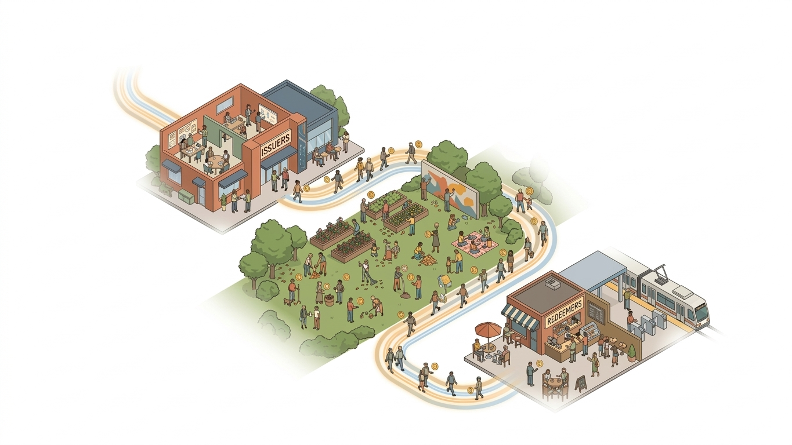
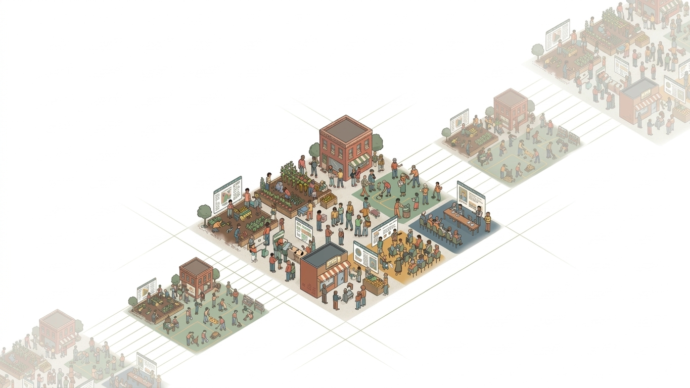

Make the Invisible, Visible.
City/Sync helps cities coordinate latent civic capacity into real operating infrastructure. It is designed to make public contribution legible and accessible so local institutions can align around shared priorities, execute with greater reliability, and continuously improve over time.
Build the Shared Public Operating System for Cities.
City/Sync exists to help public-sector organizations integrate distributed civic capacity into existing systems and workflows, strengthening coordination without requiring institutional replacement. The long-term mission is to provide a shared operating framework that cities can adopt, adapt, and govern locally while preserving transparent standards for accountability and learning.
- Establish shared coordination infrastructure across civic actors and institutions.
- Create durable governance pathways for local adaptation and public accountability.
- Enable transferable frameworks that can replicate across cities and service domains.


Outdated Systems,
Modern Complexity
Local governments are under increasing pressure to deliver more services with constrained budgets and to rebuild public trust in institutions that many residents feel have grown distant. Efforts to modernize this infrastructure are still embedded in systems designed for a different era.
At the same time, residents have more capacity to organize and coordinate than at any point in history, but the infrastructure for translating that capacity into civic outcomes is missing. Volunteerism goes unrecognized, fragmented neighborhood coordination happens on social media platforms, and community knowledge lives in the unexpressed voices of the people these systems were meant to represent.
- Siloed coordination: Agencies and nonprofits work on the same problems with disconnected systems, duplicating effort and losing shared visibility.
- Hard to replicate what works: Even successful programs are difficult to standardize and reuse across neighborhoods or cities because processes are not portable.
- Accountability is opaque: It is hard for residents to see what is happening, what is working, and who is responsible across a fragmented service ecosystem.
- Lack of engagement pathways: Most residents do not have clear, low-friction ways to contribute to their cities.
A shared coordination framework cities can govern and grow.
City/Sync seeks to create digital public infrastructure that provides cities a shared coordination substrate that establishes a common set of rules, roles, and data standards for organizing public work across institutions and communities.
By developing this infrastructure, City/Sync helps communities cultivate self-reliance by giving them the tools and infrastructure that allows for collective action to become accessible, normalized, rewarded, and capable of scaling beyond the limits of any single institution.

Shared Standards
Common definitions for contribution, verification, and public-value outcomes across participating organizations.
Administrative Pathways
Operational methods that connect local institutions, civic participants, and service organizations into one workflow.
Governance + Learning
Structured decision cycles that let cities calibrate policy, improve execution, and scale what works.

Establishing a Public-Sector Economy
The City/Sync pilot will seek to validate the foundational mechanism for a shared public operating system. The pilot will seek to facilitate a unique public-sector economy that can operate under real-world constraints, expanding the impact and mission of real organizations by rewarding civic participants through a civic-credit system that will allow them to access local goods and services. The purpose of this pilot is to generate a procedural artifact that will allow other cities to adopt and adapt the protocol according to their needs.
Pilot-Ready Architecture
For the initial pilot, City/Sync will be implemented in Berkeley, California and Mexico City, Mexico. It is designed to replicate across cities with local variation and shared standards.
How It Works
Issuer Organizations
Issuer organizations define mission-aligned task functions, maintain local task catalogs, and issue time-bound opportunities under shared public standards. They verify completion quality, publish feedback, and maintain operational accountability so civic work translates into measurable public outcomes.
Civic Participants
Civic participants browse and claim available tasks, execute approved civic labor, and submit proof for verification. Verified completion mints CITY and VOTE, turning contribution into usable access to local goods and services while building participatory influence in governance processes.
Redeemer Organizations
Redeemer organizations maintain offering catalogs, commit live offerings each Epoch, and honor redemptions through QR-enabled point-of-service flows. Their participation closes the earn-to-burn loop, provides real utility for civic credits, and helps stabilize circulation in the public-sector economy.
A Decentralized Framework for Public Administration
Our vision is for cities to evolve from closed bureaucratic processes into incentivized, participatory systems of collective action. In this future, civic work is measurable and integrated directly into the functioning of public institutions. Residents contribute through structured programs, institutions coordinate distributed effort with ease, and governance adapts in real time to community needs.
Over time, cities connected through City/Sync will form a global network of interoperable civic systems, sharing coordination frameworks, governance models, and public innovations. What begins as a pilot becomes a new infrastructure for democracy, and a way for cities to mobilize the full civic capacity of their people to produce public value at scale.
- Local chains that preserve city-level governance while retaining interoperability.
- dPAN applications that evolve independently by domain and public-service context.
- A shared global framework for exporting proven civic models across cities.

Help shape the next civic operating layer.
We are collaborating with civic institutions, public-service organizations, and local partners who want to test what coordinated public capacity can unlock.